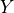
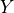

Causal Inference¶
- class pgmpy.inference.CausalInference.CausalInference(model, set_nodes=None)[source]¶
This is an inference class for performing Causal Inference over Bayesian Networks or Structural Equation Models.
- Parameters:
model (pgmpy.base.DAG | pgmpy.models.BayesianNetwork) – The model that we’ll perform inference over.
set_nodes (list[node:str] or None) – A list (or set/tuple) of nodes in the Bayesian Network which have been set to a specific value per the do-operator.
Examples
Create a small Bayesian Network.
>>> from pgmpy.models import BayesianNetwork >>> game = BayesianNetwork([('X', 'A'), ... ('A', 'Y'), ... ('A', 'B')])
Load the graph into the CausalInference object to make causal queries.
>>> from pgmpy.inference.CausalInference import CausalInference >>> inference = CausalInference(game) >>> inference.get_all_backdoor_adjustment_sets(X="X", Y="Y") >>> inference.get_all_frontdoor_adjustment_sets(X="X", Y="Y")
References
‘Causality: Models, Reasoning, and Inference’ - Judea Pearl (2000)
- estimate_ate(X, Y, data, estimand_strategy='smallest', estimator_type='linear', **kwargs)[source]¶
Estimate the average treatment effect (ATE) of X on Y.
- Parameters:
X (str (variable name)) – The cause/exposure variables.
Y (str (variable name)) – The outcome variable
data (pandas.DataFrame) – All observed data for this Bayesian Network.
estimand_strategy (str or frozenset) –
Either specify a specific backdoor adjustment set or a strategy. The available options are:
- smallest:
Use the smallest estimand of observed variables
- all:
Estimate the ATE from each identified estimand
estimator_type (str) –
The type of model to be used to estimate the ATE. All of the linear regression classes in statsmodels are available including:
GLS: generalized least squares for arbitrary covariance
OLS: ordinary least square of i.i.d. errors
WLS: weighted least squares for heteroskedastic error
Specify them with their acronym (e.g. “OLS”) or simple “linear” as an alias for OLS.
**kwargs (dict) –
Keyward arguments specific to the selected estimator. linear:
- missing: str
Available options are “none”, “drop”, or “raise”
- Returns:
The average treatment effect
- Return type:
Examples
>>> import pandas as pd >>> game1 = BayesianNetwork([('X', 'A'), ... ('A', 'Y'), ... ('A', 'B')]) >>> data = pd.DataFrame(np.random.randint(2, size=(1000, 4)), columns=['X', 'A', 'B', 'Y']) >>> inference = CausalInference(model=game1) >>> inference.estimate_ate("X", "Y", data=data, estimator_type="linear")
- get_all_backdoor_adjustment_sets(X, Y)[source]¶
Returns a list of all adjustment sets per the back-door criterion.
- A set of variables Z satisfies the back-door criterion relative to an ordered pair of variabies (Xi, Xj) in a DAG G if:
no node in Z is a descendant of Xi; and
Z blocks every path between Xi and Xj that contains an arrow into Xi.
- Parameters:
- Returns:
frozenset (A frozenset of frozensets)
Y (str) – Target Variable
Examples
>>> game1 = BayesianNetwork([('X', 'A'), ... ('A', 'Y'), ... ('A', 'B')]) >>> inference = CausalInference(game1) >>> inference.get_all_backdoor_adjustment_sets("X", "Y") frozenset()
- get_all_frontdoor_adjustment_sets(X, Y)[source]¶
Identify possible sets of variables, Z, which satisfy the front-door criterion relative to given X and Y.
- Z satisfies the front-door criterion if:
Z intercepts all directed paths from X to Y
there is no backdoor path from X to Z
all back-door paths from Z to Y are blocked by X
- get_minimal_adjustment_set(X, Y)[source]¶
Method to test whether adjustment_set is a valid adjustment set for identifying the causal effect of X on Y.
- Parameters:
- Returns:
Minimal adjustment set – A set of variables which are the minimal possible adjustment set. If None, no adjustment set is possible.
- Return type:
set or None
Examples
>>> from pgmpy.models import BayesianNetwork >>> from pgmpy.inference import CausalInference >>> dag = BayesianNetwork([("X_1", "X_2"), ("Z", "X_1"), ("Z", "X_2")]) >>> infer = CausalInference(dag) >>> infer.get_minimal_adjustment_set("X_1", "X_2") {'Z'}
References
[1] Perkovic, Emilija, et al. “Complete graphical characterization and construction of adjustment sets in Markov equivalence classes of ancestral graphs.” The Journal of Machine Learning Research 18.1 (2017): 8132-8193.
- get_proper_backdoor_graph(X, Y, inplace=False)[source]¶
Returns a proper backdoor graph for the exposure X and outcome Y. A proper backdoor graph is a graph which remove the first edge of every proper causal path from X to Y.
- Parameters:
Examples
>>> from pgmpy.models import BayesianNetwork >>> from pgmpy.inference import CausalInference >>> model = BayesianNetwork([("x1", "y1"), ("x1", "z1"), ("z1", "z2"), ... ("z2", "x2"), ("y2", "z2")]) >>> c_infer = CausalInference(model) >>> c_infer.get_proper_backdoor_graph(X=["x1", "x2"], Y=["y1", "y2"]) <pgmpy.models.BayesianNetwork.BayesianNetwork at 0x7fba501ad940>
References
[1] Perkovic, Emilija, et al. “Complete graphical characterization and construction of adjustment sets in Markov equivalence classes of ancestral graphs.” The Journal of Machine Learning Research 18.1 (2017): 8132-8193.
- is_valid_adjustment_set(X, Y, adjustment_set)[source]¶
Method to test whether adjustment_set is a valid adjustment set for identifying the causal effect of X on Y.
- Parameters:
- Returns:
Is valid adjustment set – Returns True if adjustment_set is a valid adjustment set for identifying the effect of X on Y. Else returns False.
- Return type:
Examples
>>> from pgmpy.models import BayesianNetwork >>> from pgmpy.inference import CausalInference >>> model = BayesianNetwork([("x1", "y1"), ("x1", "z1"), ("z1", "z2"), ... ("z2", "x2"), ("y2", "z2")]) >>> c_infer = CausalInference(model) >>> c_infer.is_valid_adjustment_set(X=['x1', 'x2'], Y=['y1', 'y2'], adjustment_set=['z1', 'z2']) True
References
[1] Perkovic, Emilija, et al. “Complete graphical characterization and construction of adjustment sets in Markov equivalence classes of ancestral graphs.” The Journal of Machine Learning Research 18.1 (2017): 8132-8193.
- is_valid_backdoor_adjustment_set(X, Y, Z=[])[source]¶
Test whether Z is a valid backdoor adjustment set for estimating the causal impact of X on Y.
- Parameters:
- Returns:
Is a valid backdoor adjustment set – True if Z is a valid backdoor adjustment set else False
- Return type:
Examples
>>> game1 = BayesianNetwork([('X', 'A'), ... ('A', 'Y'), ... ('A', 'B')]) >>> inference = CausalInference(game1) >>> inference.is_valid_backdoor_adjustment_set("X", "Y") True
- is_valid_frontdoor_adjustment_set(X, Y, Z=None)[source]¶
Test whether Z is a valid frontdoor adjustment set for estimating the causal impact of X on Y via the frontdoor adjustment formula.
- query(variables, do=None, evidence=None, adjustment_set=None, inference_algo='ve', show_progress=True, **kwargs)[source]¶
Performs a query on the model of the form
 where
where  is variables,  is do and Z is the evidence.
is variables,  is do and Z is the evidence.- Parameters:
variables (list) – list of variables in the query i.e. X in
.do (dict (default: None)) – Dictionary of the form {variable_name: variable_state} representing the variables on which to apply the do operation i.e. Y in
.evidence (dict (default: None)) – Dictionary of the form {variable_name: variable_state} repesenting the conditional variables in the query i.e. Z in .
adjustment_set (str or list (default=None)) – Specifies the adjustment set to use. If None, uses the parents of the do variables as the adjustment set.
inference_algo (str or pgmpy.inference.Inference instance) – The inference algorithm to use to compute the probability values. String options are: 1) ve: Variable Elimination 2) bp: Belief Propagation.
kwargs (Any) – Additional paramters which needs to be passed to inference algorithms. Please refer to the pgmpy.inference.Inference for details.
- Returns:
Queried distribution – A factor object representing the joint distribution over the variables in variables.
- Return type:
pgmpy.factor.discrete.DiscreteFactor
Examples
>>> from pgmpy.utils import get_example_model >>> model = get_example_model('alarm') >>> infer = CausalInference(model) >>> infer.query(['HISTORY'], do={'CVP': 'LOW'}, evidence={'HR': 'LOW'}) <DiscreteFactor representing phi(HISTORY:2) at 0x7f4e0874c2e0>